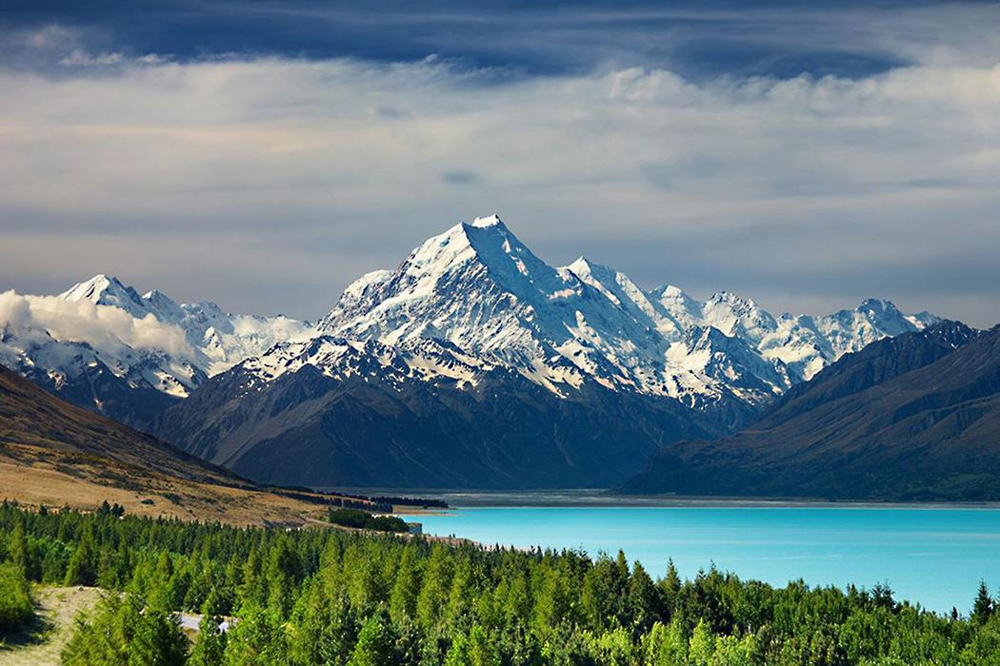
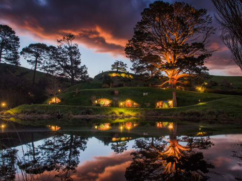
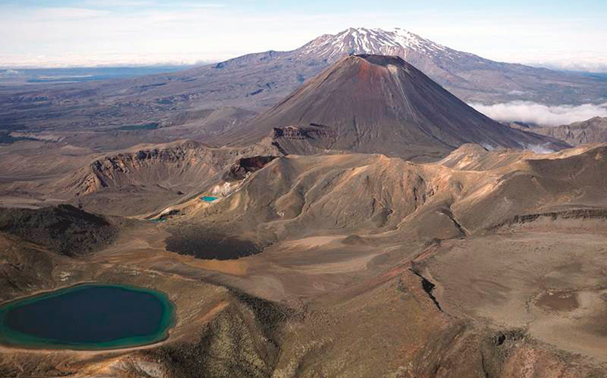
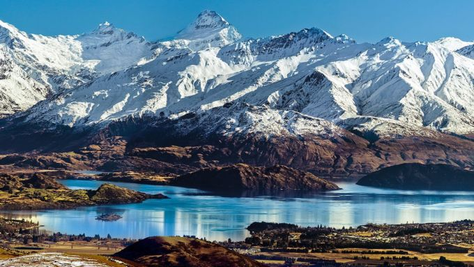
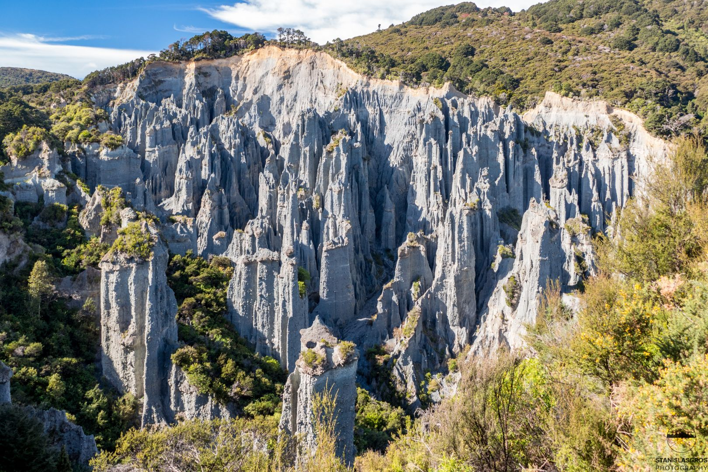
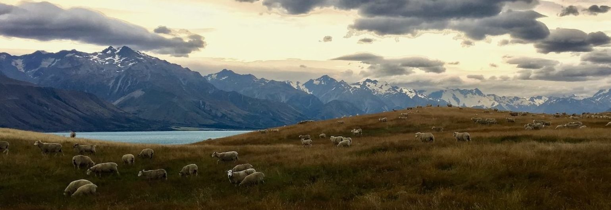

O que visitar?

EDORAS
Situada na região montanhosa de Ashburton District está Mount Sunday, uma colina enorme, que foi escolhida para ser Edoras, a capital do povo Rohan, na trilogia O Senhor dos Anéis. Os ares frescos das montanhas e seus rios e lagos cintilantes aguardam os viajantes que desejam conhecer de perto este lugar maravilhoso. Para visitar o local há empresas especializadas que realizam o tuor por cerca de 200 dólares.
O CONDADO
Sim, o Condado existe e fica localizado em Hobbiton, perto de Auckland, maior cidade da Nova Zelândia, sendo aberto a visitações. É um passeio todo guiado que dura aproximadamente duas horas. O custo vai depender da modalidade escolhida, podendo variar de NZ$ 84 a NZ$ 250.
A MONTANHA DA PERDIÇÃO
Localiza no Parque Togarino está o Monte Ngauruhoe, que na saga se tona a Montanha da Perdição, local em que o Anel é forjado pelo Senhor do Escuro, Sauron. O parque abriga ainda outros dois montes, belas paisagens, lagos verdes e planaltos quase secos. Uma ótima opção para os trilheiros, e o melhor, a entrada é gratuita.
MONTANHAS NEBULOSAS
A cordilheira usada nas gravações fica localizada na região oeste da ilha sul, formando uma espinha de norte a sul que divide o país. Nesta cordilheira, encontramos o Monte Cook, que possuí 3724m de altitude, região mais alta da Nova Zelândia. Destino e desafio de muitos alpinistas. A montanha está localizada nos limites do Parque Nacional Monte Cook ou Aoraki, como é chamado na língua dos Maoris, e é junto com o Parque Nacional West considerado Patrimônio Mundial.
CAMINHO DOS MORTOS
A incrível formação geológica Putangirua Pinnacles, localizada na região de Wairarapa, resultado de mais de 120 mil anos de erosão pluviométrica e eólica, foi utilizada como cenário para o Caminho dos Mortos. Um lugar que vale a pena visitar e se preparar para uma boa caminhada, com sapatos resistentes, comida e água, se preparem para uma caminhada deslumbrante.
CAMPOS DE PELENNOR
O lugar escolhido para ser cenário da batalha, entre milhares de Orcs e os homens de Gonor e Rohan, fica próximo à cidade de Twizel, em Mackenzie Country, é uma bacia intermontanas, sendo a maior bacia desse tipo na Nova Zelândia. No passado era uma propriedade privada utilizada para criação de ovelhas, mas recentemente tornou-se uma área aberta para visitação. A bacia se estende por aproximadamente 100 quilômetros de norte a sul e 40 de leste a oeste.
Quer saber mais?
Separamos alguns sites que também irão te ajudar, meu caro viajante:
https://www.newzealand.comhttps://www.hobbitontours.com/
https://wairarapanz.com/see-and-do/putangirua-pinnacles
https://caianomundo.ci.com.br/explore-as-paisagens-cinematograficas-da-nova-zelandia/
https://viagemeturismo.abril.com.br/materias/o-cenario-do-filme-o-senhor-dos-aneis-existe- e-fica-na-nova-zelandia/